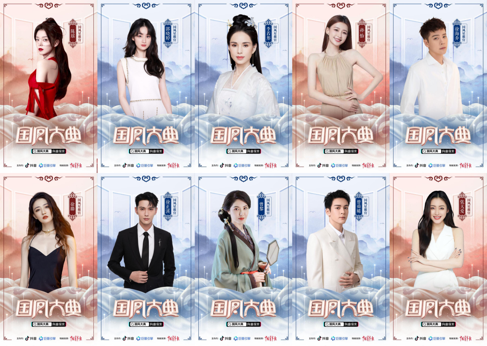
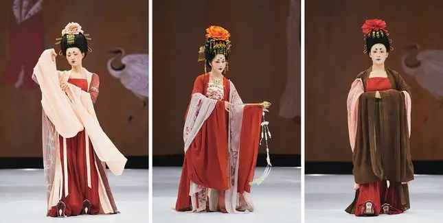
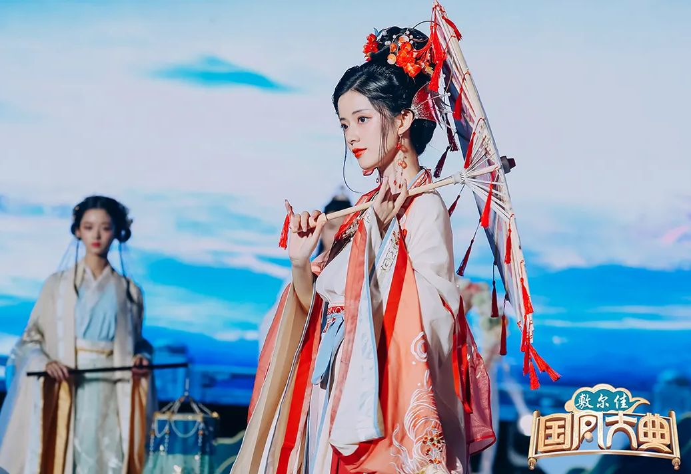
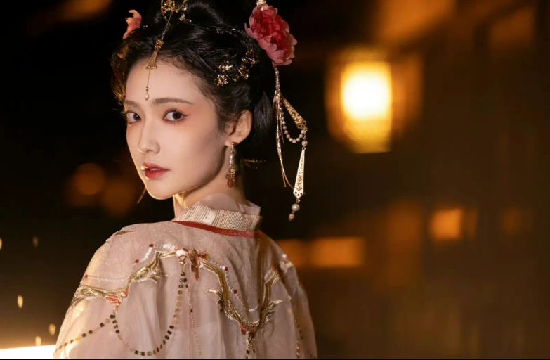

近年来，随着传统文化的不断弘扬和发展，大家对汉服、对国风的兴趣都在逐渐提升。在生活中，大家也能时常看见一些与“国风”相关的周边， 在刷短视频的时候，大家也不难看见“国风少年”、“国风少女”等的变装视频。可以说，国风已经成了年轻人眼中的一种新的艺术，也在逐渐唤 起年轻人心中对国风的热爱。现在回顾一下国风大典吧
视频来自哔哩哔哩格尼芦苇
2022国风大典」延续传统,连续三年邀请张纪中、李玉刚两位老师共同担任“国风倡导人”,呼吁更多年轻人加入到传统文化的传承和传播中来,共行国风 之路。同时,活动还邀请了陈瑶、郭晓婷、李若彤、孙怡、徐海乔、徐璐、霄磊、徐正溪、曾黎、曾舜晞、张天爱11位明星担任国风星推官,虚拟人九黎 担任国风新青年，让他们借助自身影响力，为国风文化发声，共同推动国风文化发展。

同时也邀请了众多汉服爱好者来参加本次大典褚云令、等云来、风雅司制、初立、汉尚华莲、怀谷居、静还决、南橘、拟梦、七月夕、涂七七、燕云织造局、 异志阁、远山乔、织造司共15个头部汉服商家携手范津玮、何昶希、刘宇、加奈那、卢卓、李子璇、宁心、秦牛正威、任胤菘、王一菲、吴季峰、薛八一、 宣璐、夏之光、周峻纬、张睿等20+明星及150+红人，以表演秀的形式演绎千年汉裳之美。



花开正好,秋风不燥。10月5日-6日“国风焕新夜”,让我们一起穿越千年回响，共燥东方盛事。近距离感受国风魅力，共鉴东方之美吧！